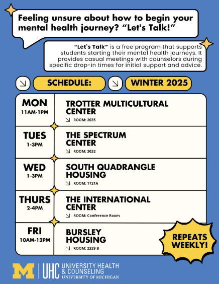

Welcome to CAPS
Counseling and Psychological Services or CAPS is committed to creating an environment based on our values of multicultural, multi-disciplinary and multi-theoretical practices that allow our diverse student body to access care, receive high quality services and take positive pathways to mental health. We are happy to offer both in-person and virtual services. For more information please visit: CAPS
Services
CAPS offers a wide range of services to help students with their mental health. Some of their popular services include:
- Let's Talk
- Individual Peer Counseling
- Togetherall
Let's Talk
“Let's Talk” is a free program that supports students starting their mental health journeys. It provides casual meetings with counselors during specific drop-in times for initial support and advice. Visit Let's Talk's website to learn more.
Individual Peer Counseling
Individual Peer Counseling is a service that allows students to talk to other students who have been trained to provide support. This service is free and confidential. Visit Individual peer counselling's website to learn more.

Togetherall
Togetherall is an online community that offers mental health support 24/7. It is free for all U-M students and provides a safe space to talk about your feelings and connect with others. Visit Togetherall's website to learn more.

Hours and Location
CAPS is open Monday through Thursday from 8am to 6pm and Fridays 8am to 5pm. It is located at Michigan Union 530 South State Street Suite 4079 Ann Arbor, MI 48109.